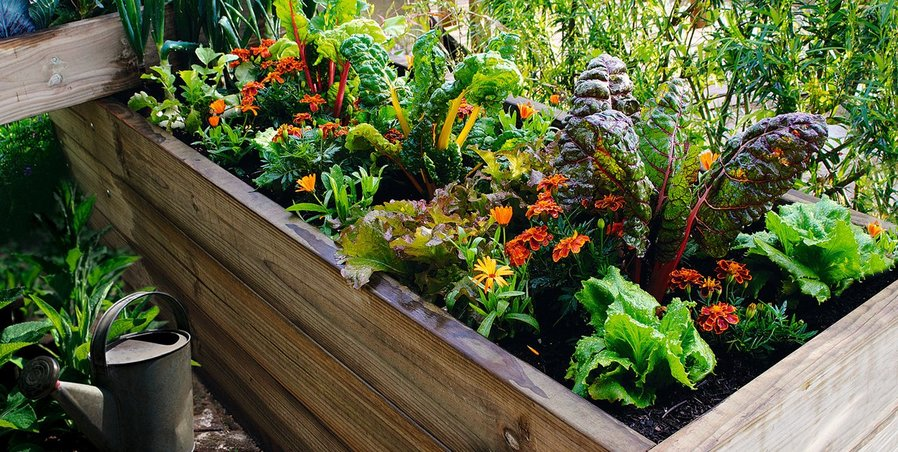

La primaver es una de las épocas preferidas del año para mucha gente. Hace buen tiempo, una temperatura adecuada para pasear y el bosque adquiere un aspecto único.
ForEsteem te propone que inicies tus pequeños cultivos; en estos meses podrás plantar una gran variedad de verduras: Berenjenas, Calabacín, Pepinos, etc..

¿Cómo hacer tu huerto?
Hacer un huerto no es tarea fácil, pero será una tarea entretenida que hacer con tu familia.
Ya que primero tendrás que contruir los cultivos utilizando materiales recicables, árboles caidos, ramas o palos y en segundo lugar tendras que
hacer el seguimiento del crecimiento de tus plantas. Podrás incluso hacer pozos para recoger el agua de lluvia para posteriormente regar tus plantas.